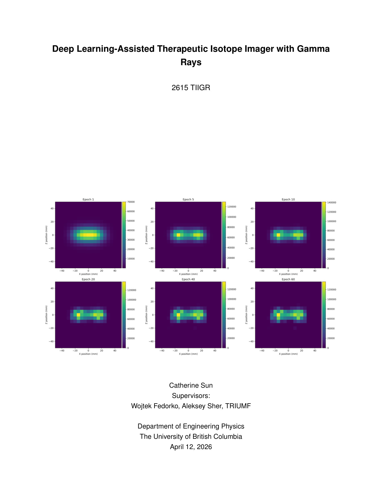
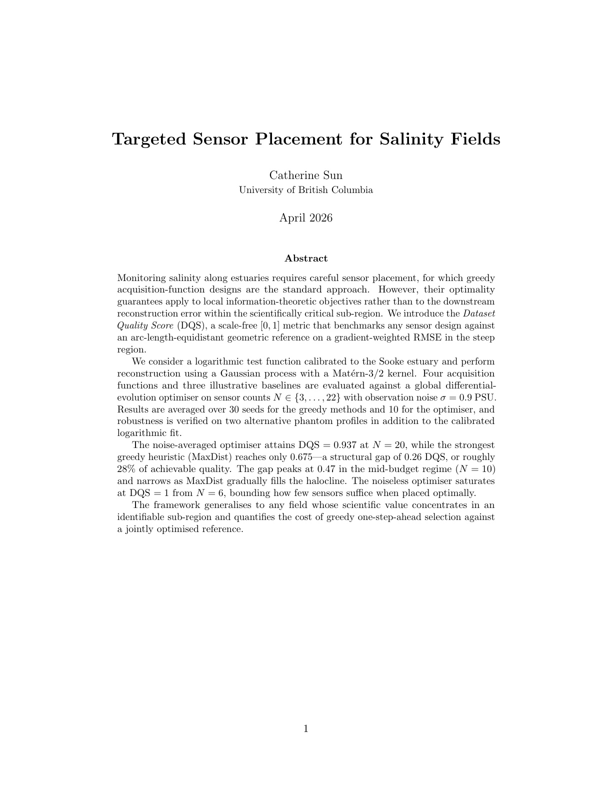

Catherine Sun.
Engineering Physics at UBC. I build systems at the boundary of machine learning, statistical inference, and numerical optimisation.
Projects
Selected work
Deep Learning Assisted Image Reconstruction
End-to-end imaging pipeline for a Compton camera used in Targeted Alpha Therapy. Reconstruction via GPU-accelerated LM-OSEM; event-selection cuts tuned with Gaussian-process Bayesian optimisation, yielding a 35.8% improvement in two-source resolution.
Report (PDF) →
Optimal Sensor Placement for Salinity Fields
Sensor placement optimisation for estuarine salinity monitoring, framed as a Gaussian-process regression problem. Introduced the Dataset Quality Score (DQS) and showed global differential-evolution search outperforms greedy acquisition functions by 28% at N = 20 sensors.
Report (PDF) →